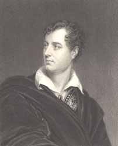

|
|
Home | Corson
Collection | Biography | Works | Image
Collection | Recent
Publications | Correspondence | Forthcoming
Events | Links | E-texts | Contact
Thomas Phillips's Portrait of Sir Walter
Scott (1815?)
| The dating of the half-length portrait of Scott
made by Thomas Phillips for
the publisher John Murray remains uncertain. The portrait is
mentioned only once in Scott's correspondence in a letter of
October 1822 to William Stewart Rose which reveals that it
was painted in London but provides no further details of the
sitting. In his biography of Scott, J.G. Lockhart dates it
to 1818, relying on information provided by Phillips himself.
In his Portraits of Sir Walter Scott, however, Francis Russell
argues that 1815 is more probable. Scott did not, in fact,
visit London in 1818 but spent ten weeks there in 1815, spending
a good deal of time at John Murray's where he met Byron. The
portrait depicts Scott turned towards the right with a plaid
of Stuart tartan over his shoulders. His collar is open and
he is holding a cap in his right hand. Click on the thumbnail,
right, to see a full-size engraving of the portrait by W.T.
Fry. |
|

|
The portrait of Scott is one of a series of portraits
that Murray commissioned Phillips to paint of the poets that
he published, including Byron, Southey, and Crabbe. Russell
argues that the Scott portrait was designed as a companion
piece to that of Byron. The attitude of Scott and the open
collar appear to be inspired by the portrait of Byron (see,
right, for an uncredited engraving). Lockhart judged the costume
'unfortunately selected', giving 'a theatrical air to what
would otherwise have been a very graceful representation of
Scott in the 47th year of his age'. For Lockhart, Phillips
had 'caught a true expression not hit upon by any of his brethren---a
smile of gentle enthusiasm' (X, 260-61). Scott does not appear
to have recorded his opinion of the painting but is known to
have disliked portraits which aimed for an inspired or poetical
effect. |
The picture remained in the Murray family until 1929; current
ownership is unknown. Francis Russell lists eight engravings made
after the portrait, copies of two of which are held in the Corson
Collection. Besides the engraving by W.T. Fry (see thumbnail
at head of page), Corson also owned an engraving by J.R.
West (click here to see a full-size image).
Bibliography
- Lockhart, John Gibson. Memoirs
of the Life of Sir Walter Scott, Bart., 2nd edn (Edinburgh:
R. Cadell, 1839)
- Russell, Francis. Portraits
of Sir Walter Scott: A Study of Romantic Portraiture (London:
The Author, 1987)
Back to Index

Last updated: 19-Apr-2005
© Edinburgh University Library
|
|